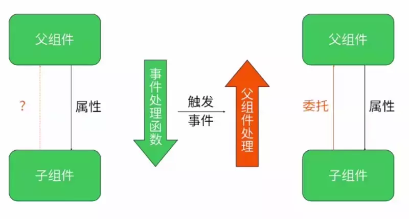
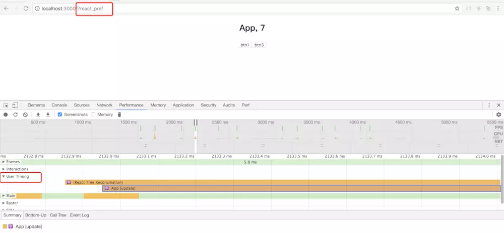
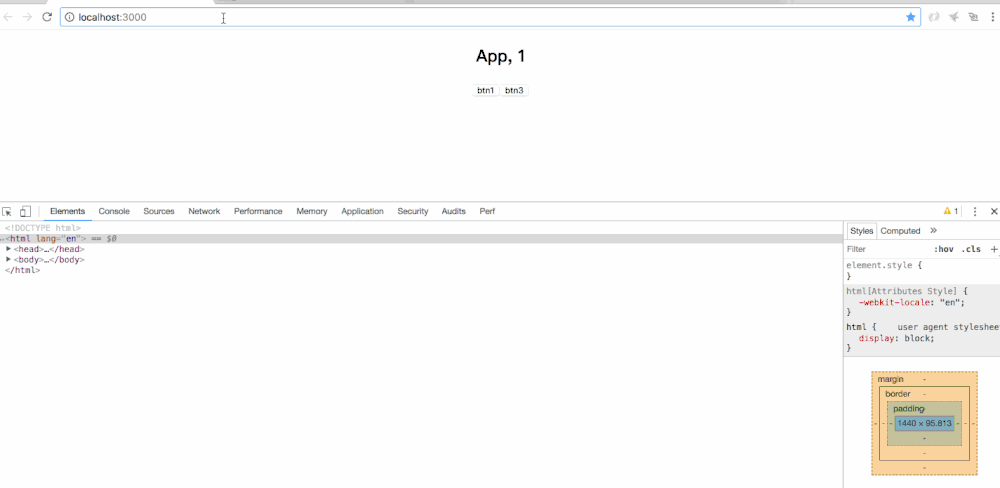
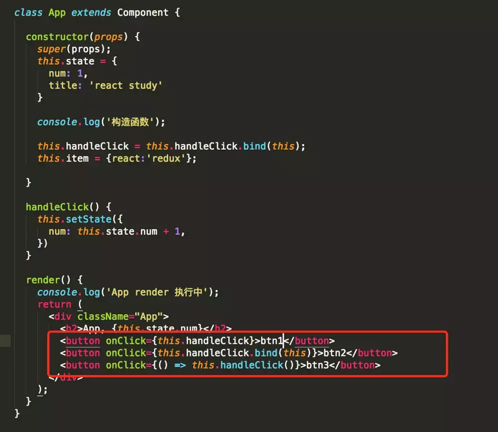

自学 React.js 一段时间了，把使用过程遇到的小坑和小技巧记录下来，希望能够帮助到其他人。此文章是长篇大论你只有耐得住寂寞，禁得住诱惑才会有所成长……
React 小技巧汇总
一、工具篇
1.显示 html
<div dangerouslySetInnerHTML={{ __html: LANG.auth_register_tips1 }}/>2.常用组件
axios(http 请求模块，可用于前端任何场景，很强大)=>封装 axiosecharts-for-react(可视化图表，别人基于 react 对 echarts 的封装，足够用了)=>echarts-for-reactrecharts(另一个基于 react 封装的图表)=>官网nprogress(顶部加载条，蛮好用)react-draft-wysiwyg(别人基于 react 的富文本封装，如果找到其他更好的可以替换)react-draggable(拖拽模块，找了个简单版的)screenfull(全屏插件)photoswipe(图片弹层查看插件，不依赖 jQuery，还是蛮好用)animate.css(css 动画库)redux Web应用是一个状态机，视图与状态是一一对应的.所有的状态，保存在一个对象里面redux-logger日志Reselect记忆组件redux-thunk为了解决异步 action 的问题redux-saga为了解决异步 action 的问题react-router-redux保持路由与应用状态(state)同步react-router-dom路由基本组件 1).在 React 中使用 react-router-dom 路由 2).react-router-dom 及组件生命周期
3.react-devtools 调试工具
工具地址:https://github.com/facebook/react-devtools
或者 直接谷歌应用商店搜索react-devtools进行安装.
二、组件通讯篇

需要组件之进行通信的几种情况
- redux 架构
- 父组件向子组件 —— props
- 子组件向父组件 —— props.funciton 接收参数
- 利用事件机制
1. 父组件向子组件通信
React 数据流动是单向的,父组件向子组件通信也是最常见的;父组件通过 props 向子组件传递需要的信息
2. 子组件向父组件通信
- 利用回调函数
- 利用自定义事件机制
子组件改变父组件的 state
// 一般改变state值的一种方式
const { data } = this.state;
this.setState({ data: {...data, key: 1 } });
// 另外一种可以通过callback的方式改变state的值
this.setState(({ data }) => ({ data: {...data, key: 1 } }));
// 还可以
this.setState((state, props) => {
return { counter: state.counter + props.step };
});3. 跨级组件通信
- 层层组件传递 props
例如 A 组件和 B 组件之间要进行通信,先找到 A 和 B 公共的父组件,A 先向 C 组件通信,C 组件通过 props 和 B 组件通信,此时 C 组件起的就是中间件的作用
- 使用 context
下面例子中的组件关系: ListItem 是 List 的子组件,List 是 app 的子组件
ListItem.js
import React, { Component } from 'react';
import PropTypes from 'prop-types';
class ListItem extends Component {
// 子组件声明自己要使用context
static contextTypes = {
color: PropTypes.string,
}
static propTypes = {
value: PropTypes.string,
}
render() {
const { value } = this.props;
return (
<li style={{ background: this.context.color }}>
<span>{value}</span>
</li>
);
}
}
export default ListItem;List.js
import ListItem from './ListItem';
class List extends Component {
// 父组件声明自己支持context
static childContextTypes = {
color: PropTypes.string,
}
static propTypes = {
list: PropTypes.array,
}
// 提供一个函数,用来返回相应的context对象
getChildContext() {
return {
color: 'red',
};
}
render() {
const { list } = this.props;
return (
<div>
<ul>
{
list.map((entry, index) =>
<ListItem key={`list-${index}`} value={entry.text} />,
)
}
</ul>
</div>
);
}
}
export default List;App.js
import React, { Component } from 'react';
import List from './components/List';
const list = [
{
text: '题目一',
},
{
text: '题目二',
},
];
export default class App extends Component {
render() {
return (
<div>
<List
list={list}
/>
</div>
);
}
}4. 没有嵌套关系的组件通信
- 组件间通信之 onRef 方法
组件间通信除了 props 外还有 onRef 方法，不过 React 官方文档建议不要过度依赖 ref。本文使用 onRef 语境为在表单录入时提取公共组件，在提交时分别获取表单信息。
下面 demo 中点击父组件按钮可以获取子组件全部信息，包括状态和方法，可以看下 demo 中控制台打印。
// 父组件
class Parent extends React.Component {
testRef=(ref)=>{
this.child = ref
console.log(ref) // -> 获取整个Child元素
}
handleClick=()=>{
alert(this.child.state.info) // -> 通过this.child可以拿到child所有状态和方法
}
render() {
return <div>
<Child onRef={this.testRef} />
<button onClick={this.handleClick}>父组件按钮</button>
</div>
}
}
// 子组件
class Child extends React.Component {
constructor(props) {
super(props)
this.state = {
info:'快点击子组件按钮哈哈哈'
}
}
componentDidMount(){
this.props.onRef(this)
console.log(this) // ->将child传递给this.props.onRef()方法
}
handleChildClick=()=>{
this.setState({info:'通过父组件按钮获取到子组件信息啦啦啦'})
}
render(){
return <button onClick={this.handleChildClick}>子组件按钮</button>
}
}原理：当在子组件中调用 onRef 函数时，正在调用从父组件传递的函数。this.props.onRef（this）这里的参数指向子组件本身，父组件接收该引用作为第一个参数：onRef = {ref =>（this.child = ref）}然后它使用 this.child 保存引用。之后，可以在父组件内访问整个子组件实例，并且可以调用子组件函数。
三、路由篇
使用 React 构建的单页面应用，要想实现页面间的跳转，首先想到的就是使用路由。在 React 中，常用的有两个包可以实现这个需求，那就是 react-router 和 react-router-dom。本文主要针对 react-router-dom 进行说明。
1、React Router 中有三类组件:
- router 组件（BrowserRouter，HashRouter）
- route matching 组件（Route，Switch）
- navigation 组件（Link）
基于 React Router 的 web 应用，根组件应该是一个 router 组件（BrowserRouter，HashRouter）。 项目中，react-router-dom 提供了和两种路由。两种路由都会创建一个 history 对象。如果我们的应用有服务器响应 web 的请求，我们通常使用
组件; 如果使用静态文件服务器，则我们应该使用 组件
2、HashRouter 和 BrowserRouter
其实就是路由的 hash 和 history 两种模式（要是不了解这两种模式之间的区别那就需要去恶补下啦）
并且这两个组件是路由的容器，必须在最外层—>内部是 Route
// hash模式
ReactDom.render(
<HashRouter>
<Route path="/" component={Home}/>
</HashRouter>
)
// history模式
ReactDom.render(
<BrowserRouter>
<Route path="/" component={Home}/>
</BrowserRouter>
)下面说说 HashRouter 和 BrowserRouter 上的参数
- basename 路由的基础链接，用来部署到非根目录下，比如你需要将项目部署到 www.xxxx.com/web 下，则设置 basename=”/web”
- getUserConfirmation 用来拦截 Prompt 组件，并且决定是否跳转
- forceRefresh 用来设置是否强制浏览器整体刷新，默认值为 false
- keLength 用来设置 location.key 的长度，默认是 6，可以自定义
3、Route
Route 是路由的一个原材料，它是控制路径对应显示的组件
Route 的参数:
- path 跳转的路径
- component 对应路径显示的组件
- render 可以自己写 render 函数返回具体的 dom，而不需要去设置 component
- location 传递 route 对象，和当前的 route 对象对比，如果匹配则跳转
- exact 匹配规则，true 的时候则精确匹配。
4、Router
低级路由，适用于任何路由组件，主要和 redux 深度集成，使用必须配合 history 对象
使用 Router 路由的目的是和状态管理库如 redux 中的 history 同步对接
<Router history={history}>
...
</Router>5、Link 和 NavLink
两者都是跳转路由，NavLink 的参数更多些
Link 的 api
to 有两种写法，表示跳转到哪个路由
字符串写法
对象写法
<Link to={{ pathname: '/courses', search: '?sort=name', hash: '#the-hash', state: { fromDashboard: true } }}/>replace 就是将 push 改成 replace
innerRef 访问 Link 标签的 dom
NavLink 的 api
Link 的所有 api
activeClassName 路由激活的时候设置的类名
activeStyle 路由激活设置的样式
exact 参考 Route，符合这个条件才会激活 active 类
strict 参考 Route，符合这个条件才会激活 active 类
isActive 接收一个回调函数，active 状态变化的时候回触发，返回 false 则中断跳转
const oddEvent = (match, location) => { console.log(match,location) if (!match) { return false } console.log(match.id) return true } <NavLink isActive={oddEvent} to="/a/123">组件一</NavLink>
location 接收一个 location 对象，当 url 满足这个对象的条件才会跳转
<NavLink to="/a/123" location={{ key:"mb5wu3", pathname:"/a/123" }}/>
6、Redirect
Redirect 重定向很简单，我们直接看代码即可
// 基本的重定向
<Redirect to="/somewhere/else" />
// 对象形式
<Redirect
to={{
pathname: "/login",
search: "?utm=your+face",
state: { referrer: currentLocation }
}}
/>
// 采用push生成新的记录
<Redirect push to="/somewhere/else" />
// 配合Switch组件使用，form表示重定向之前的路径，如果匹配则重定向，不匹配则不重定向
<Switch>
<Redirect from='/old-path' to='/new-path'/>
<Route path='/new-path' component={Place}/>
</Switch>7、Switch
路由切换，只会匹配第一个路由，可以想象成 tab 栏
Switch 内部只能包含 Route、Redirect、Router
<Switch>
<Route exact path="/" component={Home}/>
<Route path="/about" component={About}/>
<Route path="/:user" component={User}/>
<Route component={NoMatch}/>
</Switch>8、withRouter
当一个非路由组件也想访问到当前路由的 match,location,history 对象，那么 withRouter 将是一个非常好的选择，可以理解为将一个组件包裹成路由组件
import { withRouter } from 'react-router-dom'
const MyComponent = (props) => {
const { match, location, history } = this.props
return (
<div>{props.location.pathname}</div>
)
}
const FirstTest = withRouter(MyComponent);9、history 对象
用过 vue 的都知道，vue-router 有组件形式的导航，也有编程式导航，那 react-router 怎么使用 api 来控制前进后退和刷新呢？这就需要我们来说明下history对象的作用了其实在每个路由组件中我们可以使用this.props.history获取到history对象，也可以使用 withRouter 包裹组件获取，在 history 中封装了 push，replace，go 等方法，具体内容如下
History {
length: number;
action: Action;
location: Location;
push(path: Path, state?: LocationState): void; // 调用push前进到一个地址,可以接受一个state对象，就是自定义的路由数据
push(location: LocationDescriptorObject): void; // 接受一个location的描述对象
replace(path: Path, state?: LocationState): void; // 用页面替换当前的路径，不可再goBack
replace(location: LocationDescriptorObject): void; // 同上
go(n: number): void; // 往前走多少也页面
goBack(): void; // 返回一个页面
goForward(): void; // 前进一个页面
block(prompt?: boolean | string | TransitionPromptHook): UnregisterCallback;
listen(listener: LocationListener): UnregisterCallback;
createHref(location: LocationDescriptorObject): Href;
}这样我们想使用 api 来操作前进后退就可以调用 history 中的方法啦
其次也可通过暗转 history 库来实现，具体案例如下
import { BrowserRouter } from 'react-router-dom';
const history = require('history').createBrowserHistory();
/**
* forceRefresh: bool
* 作用：当浏览器不支持 HTML5 的 history API 时强制刷新页面。
*/
const supportsHistory = 'pushState' in window.history;
<BrowserRouter
history={history}
basename="/"
forceRefresh={!supportsHistory}
>
{/* 路由入口 */}
......
</BrowserRouter>10、 React-router 页面跳转的三种方式
React-router 页面跳转的三种方式:https://blog.csdn.net/Vue2018/article/details/100564775
四、性能篇
1、react 组件的性能优化（渲染角度优化）
1、react 性能查看工具
再讲性能优化之前，我们需要先来了解一下如何查看 react 加载组件时所耗费的时间的工具，在 react 16 版本之前我们可以使用 React Perf 来查看。react16 版本之前，我们可以使用 react-addons-perf 工具来查看，而在最新的 16 版本，我们只需要在 url 后加上?react_pref。
首先来了解一下react-addons-perf
react-addons-perf这是 React 官方推出的一个性能工具包，可以打印出组件渲染的时间、次数、浪费时间等。
简单说几个 api，具体用法可参考官网：
- Perf.start() 开始记录
- Perf.stop() 结束记录
- Perf.printInclusive() 查看所有设计到的组件 render
- Perf.printWasted() 查看不需要的浪费组件 render
大家可以在 chorme 中先安装 React Perf 扩展，然后在入口文件或者 redux 的 store.js 中加入相应的代码即可：
再来了解一下，在最新的 React16 版本中，在url后加上?react_pref，就可以在 chrome 浏览器的performance，我们可以查看User Timeing来查看组件的加载时间。点击 record 开始记录，注意记录时长不要超过 20s，否则可能导致 chrome 挂起。

大图

2、单个 react 组件性能优化
- 1、render 里面尽量减少新建变量和 bind 函数，传递参数是尽量减少传递参数的数量。
首先我们先思考一个问题，比如我要实现一个点击按钮使相应的 num 增加 1，我们有哪一些方法。
大家应该都能想到，无非就是三种，如下图：

第一种是在
构造函数中绑定 this，第二种是在 render()函数里面绑定 this，
第三种就是使用箭头函数，都能实现上述方法；
但是哪一种方法的性能最好，是我们要考虑的问题。应该大家都知道答案：第一种的性能最好。因为第一种，构造函数每一次渲染的时候只会执行一遍；
而第二种方法，在每次 render()的时候都会重新执行一遍函数；
第三种方法的话，每一次 render()的时候，都会生成一个新的箭头函数，即使两个箭头函数的内容是一样的。2、定制 shouldComponentUpdate 函数
shouldComponentUpdate 是决定 react 组件什么时候能够不重新渲染的函数，但是这个函数默认的实现方式就是简单的返回一个 true。也就是说，默认每次更新的时候都要调用所用的生命周期函数，包括 render 函数，重新渲染。
我们来看一下下面的一个例子

我们写两个组件，App 和 Demo 组件，并写两个方法，一个改变 App 中的 num 的值，一个是改变 title，我们在 Demo 的 render 中打印 render 函数。我们可以看到以下的效果：

我们可以清晰的看到虽然 demo 组件里的 title 值没有改变，但是还是 render 了。
为了解决这个问题，我们可以对 demo 组件进行如下的修改：

只有当 demo 的 title 值发生改变的时候，我们才去 render，我们可以看一下效果：

以上只是一个特别简单的一个对于 shouldComponentUpdate 的定制。在最新的 react 中，react 给我们提供了 React.PureComponent，官方也在早期提供了名为 react-addons-pure-render-mixin 插件来重新实现 shouldComponentUpdate 生命周期方法。
通过上述的方法的效果也是和我们定制 shouldComponentUpdate 的效果是一致的。但是我们要注意的是，这里的 PureRender 是浅比较的，因为深比较的场景是相当昂贵的。所以我们要注意我们在 1.1 中说到的一些注意点：不要直接为 props 设置对象或者数组、不要将方法直接绑定在元素上，因为其实函数也是对象
2、redux 性能优化：reselect（数据获取时优化 待研究）
3-1、分隔代码
1、动态加载
ES6 标准引入了 import 以方便我们静态加载模块。形式如：
import xxx from xxx.尽管 import 对于我们加载模块很有帮助，但是静态加载模块的方式一定程度上限制了我们来实现异步模块加载。不过，目前动态加载模块的 import()语法已处于提案阶段，并且 webpack 已将他引入并使用。import()提供了基于 Promise 的 API，因此，import()的返回值是一个完成状态或拒绝状态的 Promise 对象。形式如：
import(/* webpackChunkName: 'module'*/ "module")
.then(() => {
//todo
})
.catch(_ => console.log('It is an error'))webpack 在编译时，识别到动态加载的 import 语法，则 webpack 会为当前动态加载的模块创建一个单独的 bundle。如果你使用的是官方的 Create-react-app 脚手架或 React 的服务端渲染框架 Next.js，那么可以直接使用动态 import 语法。如果你的脚手架是你自己配置的 webpack，那么你需要按照官方指南来设置，请移步[1]。
2、动态加载 React 组件
当前最为流行的一种方法是使用 React-loadable [2]库提供的懒加载 React 组件。它利用 import()语法，使用 Promise 语法加载 React 组件。同时，React-loadable 支持 React 的服务端渲染。 通常，我们以如下方式实现组件：
import LazyComponet from 'LazyComponent';
export default function DemoComponent() {
return (
<div>
<p>demo component</p>
<AComponent />
</div>
)
}在上面的例子中，假设 LazyComponet 在 DemoComponent 渲染时我们并不展示。但是因为我们使用 import 语法将 LazyComponet 导入，所以在编译时会将 LazyComponet 的代码与 DemoComponent 的代码打包到同一个 bundle 里面。 但是，这并不是我们想要的。所以我们可以通过使用 React-loadable 来懒加载 LazyComponet ，同时将 LazyComponet 的代码单独打包到一个 bundle 里面。我们可以看一下官网提供的例子：
import Loadable from 'react-loadable';
import Loading from './my-loading-component';
const LoadableComponent = Loadable({
loader: () => import('./my-component'),
loading: Loading,
});
export default class App extends React.Component {
render() {
return <LoadableComponent/>;
}
}从例子中我们可以看到，react-loadable 使用动态 import()方法，并将导入的组件分配给 loader 属性。同时，react-loadable 提供了一个 loading 属性，以设置在加载组件时将展示的组件。
3、高阶组件（HOC）
高阶函数，可以传入函数作为参数的函数，如 map,sort,reduce。高阶组件包装了另一个组件的组件。
属性代理 （Props Proxy）
反向继承 （Inheritance Inversion）
4、无状态组件
使用无状态组件，只从父组件接收 props，可以提高组件的渲染性能
const HelloWorld = (props) => <div>{props.name}</div>ReactDOM.render(<HelloWorld name="HelloWorld" />,App)5、componentWillReceiveProps 中取 props 的值
注意应该取 nextProps,而不是 this.props
6、bind 绑定函数
利用 bind 绑定函数，是默认有 event 这个参数的，只是这个参数在给定参数之后
handleClockClick (id, e) {
console.log(id,e)
}
<button onClick={this.handleClockClick.bind(this, 2)}>Clock</button>7、ES6 类中，函数 this 不默认指向 对象
this.getDomNode 已经在低版本被移除了，现在设置 ref=xxx，然后使用 this.refs.xxx 访问 DOM 元素
ref可以赋值两种类型，一种是字符串，一种是函数, 字符串只能用在类组件，DOM 元素使用函数，纯函数组件不能使用 ref。旧版本 DOM 元素虽然可以使用 ref，但是 React 已不推荐。ref="test" // this.refs.test 访问ref={test => this.test = test} // this.test 访问
8、当只写属性名时，默认值为 true
<MyComponent isStock/>// isStock 默认为 true9、在 IE11 以下使用 React16
React16 依赖集合类型 Map 和 Set，在未提供原生支持的浏览器，需要使用一个 polyfill,例如 core-js 和 babel-polyfill
使用 core-js 支持
import 'core-js/es6/map';import 'core-js/es6/set';
import React from 'react';
import ReactDOM from 'react-dom';
ReactDOM.render(<h1>Hello, world!</h1>,document.getElementById('root'));3-2、分隔代码
1、componentDidMount 请求服务器数据
在 componentDidMount 请求服务器数据并利用 setState 时应注意，在组件卸载 componentWillUnmount 应该把去求去掉
2、利用 es6 rest 参数（形式为…变量名）传递可变数量的 props
// 定义子组件
const Demo = ({ prop1, prop2, ...restProps }) => (
<div>{ restProps.text}</div>
)
// 父组件使用Demo
<Demo prop1={xxx} prop2={xxx} text={xxx}/>3、setState 的其他用法
// 一般改变state值的一种方式
const { data } = this.state;
this.setState({ data: {...data, key: 1 } });
// 另外一种可以通过callback的方式改变state的值
this.setState(({ data }) => ({ data: {...data, key: 1 } }));
// 还可以
this.setState((state, props) => {
return { counter: state.counter + props.step };
});4、React 性能优化
// React 性能优化有很多种方式，
// 那常见的一种就是在生命周期函数 shouldComponentUpdate 里面判断
// 某些值或属性来控制组件是否重新再次渲染。
// 判断一般的字符串，数字或者基础的对象，数组都还是比较好处理
// 那嵌套的对象或者数组就比较麻烦了，对于这种
// 推荐使用 lodash(或者其他的类似库)的 isEqual 对嵌套数组或对象进行判断
shouldComponentUpdate(nextProps, nextState) {
if (_.isEqual(nextState.columns, this.state.columns)) return false;
return true;
}
5、React 进阶提高 - 技巧篇（28 个视频）链接
介绍 React 的一些进阶知识点，一些开发上的实践技巧，一些工具库等。
五、学习资料
翻译后的官方文档，学技术一定要多看几遍文档: doc.react-china.org
react官网:https://www.reactjscn.com/